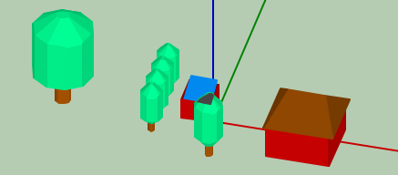

SAM Shading Analysis Tool

Shortcut keys:
- Arrow keys offset the scene from center
- I zooms in (increases the scale)
- O zooms out
- C centers the scene
- Z sets view mode to side view
- T sets view mode to top view
- S sets view mode to 3D view
- A makes all objects visible
Mouse buttons
- Left in top and side views resize and moves objects
- Left in 3D view moves through azimuths and altitudes
- Wheel zooms in and out